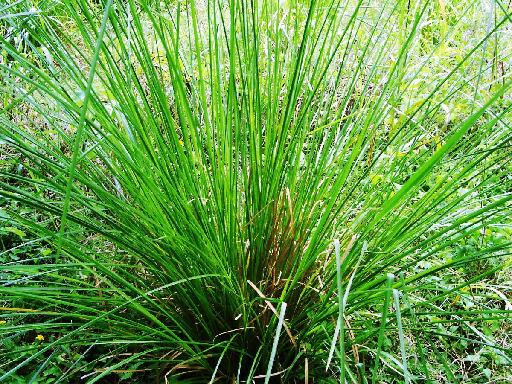
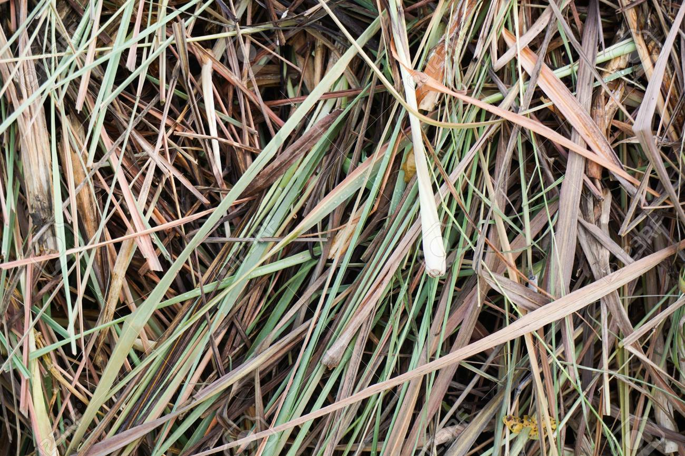

Zacate de Limón
Cymbopogon citratus


Descripción
El Zacate de Limón, también conocido como té de limón o limonaria, es una planta aromática muy popular en Nicaragua. Sus hojas largas y delgadas despiden un intenso aroma a limón cuando se frotan. Crece en forma de mata densa que puede alcanzar hasta 1.5 metros de altura.
Es una de las plantas medicinales más utilizadas en los hogares nicaragüenses, presente en casi todos los jardines y patios del país.
Ubicación en Nicaragua
Se encuentra principalmente en jardines, huertos y zonas de cultivo húmedas de los departamentos de:
- Matagalpa
- Jinotega
- Boaco
- Carazo
- Masaya
Datos Curiosos
- Originaria de Asia tropical, pero completamente naturalizada en Nicaragua.
- El aroma a limón proviene del aceite esencial citral.
- Se reproduce por división de mata, no por semillas.
- Una sola planta puede producir té para toda una familia.
- Repele naturalmente mosquitos y otros insectos.
- En Nicaragua se consume más como té que el té tradicional.
Beneficios y Usos
- Digestivo: Alivia dolores estomacales y mejora la digestión.
- Calmante: Reduce el estrés y ayuda a dormir mejor.
- Febrífugo: Usado tradicionalmente para bajar la fiebre.
- Culinario: Da sabor a sopas, carnes y pescados.
- Repelente: Mantiene alejados mosquitos y plagas.
- Aromático: Usado en aromaterapia y cosméticos naturales.